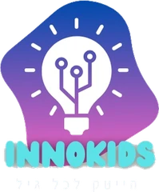

נרשמתם! המקום שלכם במשדר שמור.
שלב 1 מתוך 2 הושלם
רגע, עוד צעד אחד חשוב:
להצטרפות לקבוצת הוואטסאפ של המשדרשם יישלח לינק הזום, ושם תקבלו תזכורת לפני שמתחילים.
יוםיום שלישי
תאריך10.11.2026
שעה18:30
אורךכשעה
איפהבזום!
ועוד משהו קטן: ספרו לילד שלכם שנרשמתם. אולי הוא ירצה לשבת לידכם. נתראה על המסך,עמית